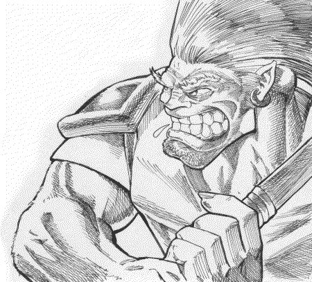

Forums galactiques > Taverne galactique : lieu de discussion informel > Un nouvel arrivant
Pages : 1
pinocytose 12/02 ETU 14:58 | Un hommme couvert de poussiere fit son apparition dans la taverne.Il dévisagea quelque commandant puis il s'approcha en boitant d'un groupe de buveur de coca.Reflechis un court instant avant de s'exprimer en ces mots: "Salutations commandants je viens d'arriver dans cette galaxie et je viens me présenter a vous. J'arrive d'une autre galaxie mais je ne sais pas comment j'en suis sortis et comment je suis arrivé ici mais je me rends compte que je n'ai aucune idée de la vie politique de cette galaxie.Alors si une âme charitable pouvait me dire quel est la situation dans la galxie je lui en serai reconnaissant. Sur ces mots il se mit a manger, silencieusement, un Ghozer aux fruits en attendant qu'un commandant réponde a sa requête. |
| Kores  13/02 ETU 19:14 | Moi ossi, je sui nouvo dan cette galaxi, je sui un troll de la planet des troll. HRP:L'orthographe est fait pour le personnage Rôle Play ! |
Spectror 13/02 ETU 19:23 | Non, non et NON ! Ah ben pas encore ! Mais qu'est-ce que ça veut dire ! *Etc etc...* L'orthographe n'est nullement réservé au personnage, d'ailleurs la Taverne Galactique est aussi un lieu de RP ! |
Thâois 13/02 ETU 19:25 | rachete toi un RP Kores.. si tu veux on en discute par MP.. |
tsumi 13/02 ETU 19:48 | Réponse HRP : Joueurs, désolé de vous dire que ce post est strictement inutile, il en existait déjà trop de ce genre, celui-ci n'est qu'un de plus. On peut donc rapidement trouver ces mêmes informations dans d'autres endroits. Ensuite, ce jeu n'est pas un jeu médiéval fantastique, un troll.. Hmm, si cela n'est pas tiré du médiéval fantastique, je suis surpris. Enfin, comme l'ont déjà dit les autres joueurs, l'orthographe est un point sensible de beaucoup d'entre nous, même si le personnage ne sait pas bien parler, je tiens à préciser une chose : On écrit dans des forums, pourtant nos personnages n'écrivent pas souvent, ils parles ou agissent. Alors dire que c'est dans le rp les fautes, Hmm, histoire de trouver des excuses? Il y a d'autres moyens de faire remarquer que son personnage ne sait pas parler, ou a un accent. Encore faut il bien le faire. Amusez vous bien. |
Kores13/02 ETU 19:50 | la race troll est toujours vivante, comme les nains. Et puis c'est mon RP et pas le votre ! et c'est mon choix |
Spectror13/02 ETU 20:50 | Fais gaffe, même si le FOU (Front Orthographique Uni[s]) est pacifique, le CASTOA, ou Comité Anti-Sauvage Trucidant les Organismes Analphabètes (dont je suis l'unique membre, même si je ne l'ai pas inventé j'ai quand même trouvé le nom complet) est légèrement plus {sauvage}... Spectrissime Jack. of B. [Ey mayrde, je suis tellement bourré que je signe...] |
Arhain 13/02 ETU 21:21  | Bon, pour ce qui est du choix du Troll, ça ne me gêne pas. On trouve d'ailleurs des univers futuristes où ils existent comme Shadowrun. Personnellement, je trouve que ça peut le faire... Par contre, au sujet de l'aurtograf', je suis d'accord que tes messages RP sont la retranscription des faits et gestes de ton personnage. Par conséquent, il doit être écrit correctement, même pour les "dialogues". La seule exception pourrait être constituée par les "accents" qui déforment la prononciation des mots (je pense à Caliban et à Bob Brache). Auquel cas, ce peut être toléré (bien qu'un académicien ferait une crise cardiaque à la vue d'un tel message...). |
Spectror13/02 ETU 21:23 | Vi, jé pèncé qu'él peut faire dais dayalôgues avouc zimple accentz. |
Pages : 1
Forums galactiques > Taverne galactique : lieu de discussion informel > Un nouvel arrivant